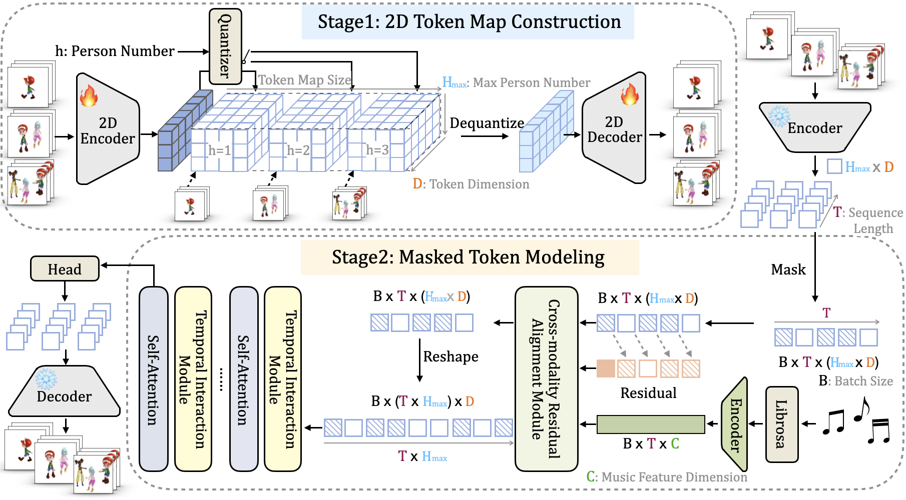
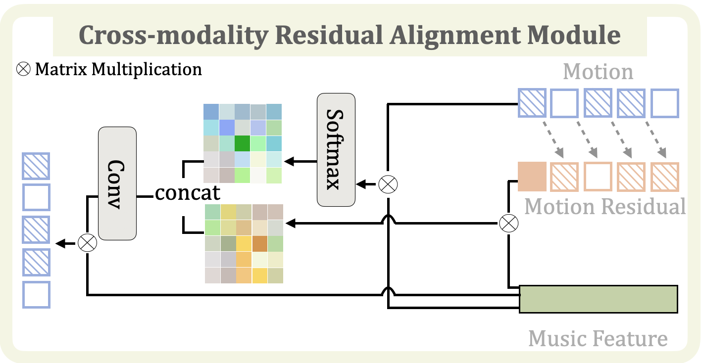
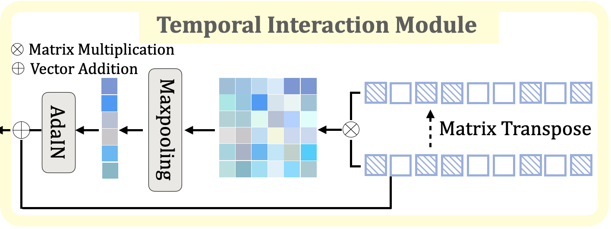

Towards Harmonic Free-Number Group Dance Generation via a Unified Framework
Authors: Yiwen Zhao, Yang Wang, Liting Wen, Hengyuan Zhang, Xingqun Qi
TL;DR: We propose a novel unified framework capable of synthesizing free-number dancers harmonically aligned with given music.
Demo Video
Our approach enables group choreography with a user-specified number of dancers in a single training pass while effectively leveraging training data from various group sizes.
Crucially, it preserves dancer-number-dependent group interaction patterns, ensuring natural and coordinated movement.
Pipeline

The pipeline of our proposed FreeDance framework.
- In stage one, we present a 2D token map to encode the arbitrary number of dancer motions into spatial-temporal fine-grained discrete tokens.
- In stage two, we formulate the masked token modeling to enable user-specific dancer number generation.
Module Design
Our curated modules enhance the framework’s ability to generate harmonized group dances while maintaining individual motion diversity.

Cross-modality Residual Alignment Module (CRAM) boosts the alignment between individual motion and the music signal. It makes the group motion coherent while preserving individual diversity. A novel design of the motion token residual is used here to provide additional music-motion alignment cues.

Temporal Interaction Module (TIM) effectively models the temporal correlation between current individuals w.r.t neighboring dancers as interaction guidance to foster stronger inter-dancer dependencies. It intensifies group interaction and coordination, resulting in natural group choreography.
Visualizations
In-domain testset music:
(Click the slick dots to view different samples.)
Out-of-domain music:
(Credits: That's What I Like - Bruno Mars | Ditto - NewJeans | Fire - Gavin DeGraw.)